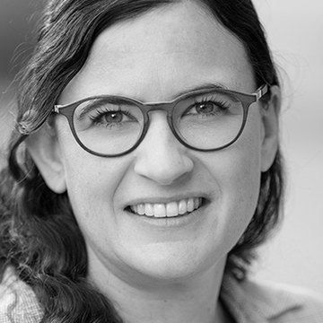

Wir entwickeln digitale Kärtchenaktivitäten für den Mathematikunterricht der Sekundarstufe I. Mit ihnen denken Schülerinnen und Schüler in selbständigen Lernzeiten gemeinsam über Mathematik nach.
Henrike Allmendinger, Martin Lacher, Luzia Christen · PH Luzern
Ergibt die Summe weniger als 1, genau 1 oder mehr als 1? Legen Sie jede Karte auf ein Feld, ohne zu rechnen.
So beginnt eine digitale Kärtchenaktivität. Eine Gruppe legt die Karten und muss sich einigen, wo jede hingehört.
Karte ziehen, oder zuerst die Karte und dann das Feld anklicken.
für selbständige Lernzeiten in Mathematik
Viele Volksschulen haben selbständige Lernzeiten eingeführt, etwa ein Lernatelier oder einen Wochenplan. Die Schülerinnen und Schüler arbeiten dort an Aufgaben, die die Lehrperson vorbereitet hat.
In Mathematik fehlen dafür kognitiv aktivierende Aufgaben, über die sich Schülerinnen und Schüler austauschen müssen. Solche Aufgaben zu entwickeln, braucht mehr Zeit, als Lehrpersonen im Alltag haben. Deshalb wählen sie meist Aufgaben, die alle sicher allein lösen können.
Was in diesen Lernzeiten entsteht, kommt zudem selten in den Klassenunterricht zurück. Die Lehrperson sieht am Ende vor allem die Ergebnisse.
Bei einer digitalen Kärtchenaktivität ordnet eine Gruppe Karten und begründet, warum jede Karte dort liegt. Weil die Karten digital sind, sieht die Lehrperson danach, wie jede Gruppe vorgegangen ist. Wo Gruppen verschieden entschieden haben, setzt sie im Klassengespräch an.
Im Pilotprojekt SORT entstehen im Schuljahr 2026/27 acht Kartensätze für die 7. und 9. Klasse. Erprobt werden sie in fünf Schulklassen. In SORT II kommt die 8. Klasse dazu, und wir bauen daraus in drei Schuljahren ein Angebot für alle Schulen der Sekundarstufe I.
über drei Schuljahre, rund 194’000 pro Jahr
Direkte Kosten CHF 484’200, dazu der Overhead der Hochschule. Ein Klick auf einen Posten zeigt, wie er zustande kommt.Dozentin für Mathematikdidaktik an der PH Luzern. Setzt Kärtchenaktivitäten seit Jahren in ihrer Lehre ein und hat sie im Pilot systematisiert.
Dozent für Mathematik Sek I an der PH Luzern. Leitet «Das neue Mathbuch» und die Mathbuch-Applets.

Luzia ChristenBringt die Schulpraxis mitSekundarlehrerin und Dozentin für Mathematik Sek I. Kennt als Fachberaterin die Schulen.
Dazu wissenschaftliche Mitarbeit für die Begleitforschung, studentische Hilfskräfte sowie eine technische und eine grafische Stelle für die Plattform.